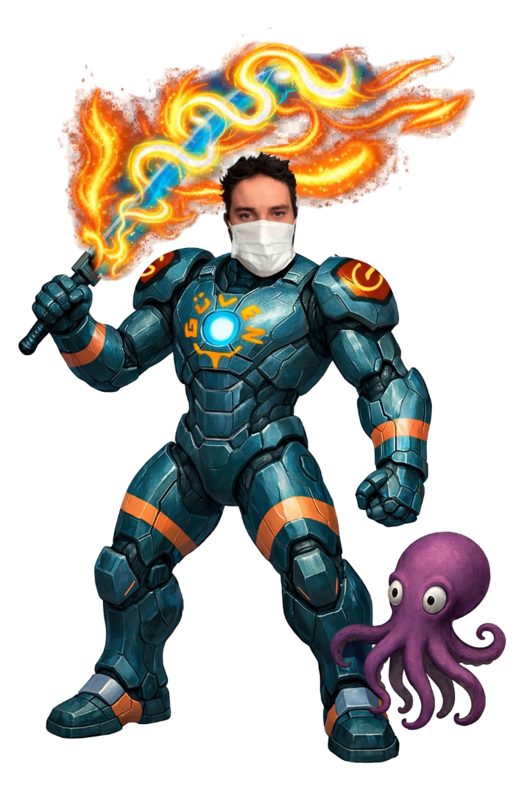

Engineer · Software · Project Management · Art
Güven
ÇALIŞKAN
an Artist, a SWE and a PM.
A multidisciplinary practice connecting engineering, technology, project management and visual art.
Explore my work →
A multidisciplinary profile
Engineering gives me structure.
Art gives me another way to think.


Selected work
Ideas into
real things.
From research and software to project management, continuous improvement and digital art, my work sits at the intersection of analytical thinking and creative practice.